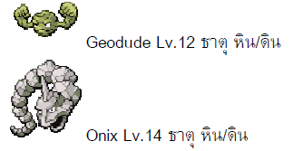
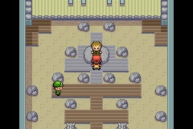
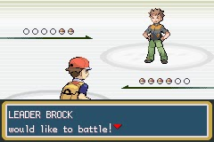
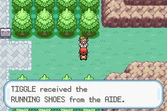

บทที่ 4 / 29
นิบิซิตี้<Pewter City>
❖
มาเมืองนี้ ให้รักษาตัว ซื้อของให้พร้อม เตรียมสู้กับ ยิมลีดเดอร์ ให้ดี พอพร้อมแล้ว ให้เราเข้าไปในสถานที่ที่ คล้ายโกดังที่มีคำว่าgym เขียนตรงทางเข้า แล้วเข้าไปสู้ผู้นำยิม ซึ่งโดยปกติจะอยู่ส่วนในสุดของยิม (อย่าลืมบันทึกเกมก่อนที่จะสู้กับผู้นำยิม หากแพ้ขึ้นมา เงินหายไปครึ่งเลยนะ) หัวหน้ายิมชื่อทาเคชิ ซึ่งใช้โปเกมอนหิน ดังนี้

ธาตุที่แนะนำให้ใช้คือ พืช หรือ น้ำ ซึ่งใครเลือก ฟุชิกิดาเนะ หรือเซนิกาเมะ ก็สบายๆ แต่หากไม่เลือก ลองใช้วิธีนี้ดู ให้เราจับตัว แคตาปี(No10)มา แล้ววิวัตนาการเป็นทรานเซลตอนเลเวล7และเป็นบัตเตอร์ฟรีตอนเลเวล10 แล้วจะได้ท่า Confusion (เป็นท่าของพลังจิต)มาให้ใช้ท่านั้นกำจัดโปเกมอนของผู้นำยิมได้เมื่อชนะแล้วเราจะได้ Boulderbadge ที่เพิ่ม Attack โปเกมอนของเราเล็กน้อย และทำให้ใช้ท่าแฟลชได้ พร้อมตังค์1400เยน และ TM39 Rock Tomb (เราจะได้ TM Case โดยอัตโนมัติ)


พอสู้เสร็จแล้วให้ออกจากยิมเดินทางทิศตะวันออก ก่อนถึงภูเขาโคสุคิมิ<Mt.Moon> จะเจอนักวิจัยให้รองเท้าใส่วิ่ง(กดBค้าง) จากนั้นให้ไปถนนหมายเลข3 ไปยัง ภูเขาโคสุคิมิ (เเอดมินก็คิดนะว่าทำไหมต้องใส่รองเท้าเเล้วถึงจะวิ่งได้ 5555)
